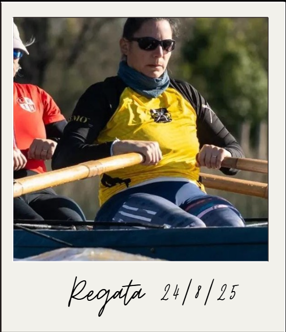
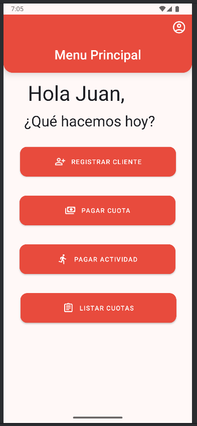
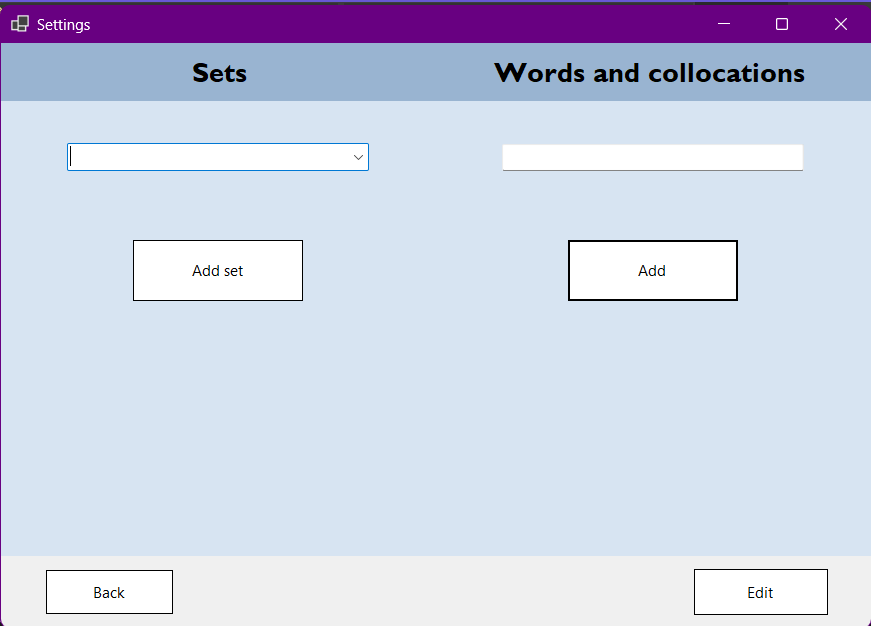
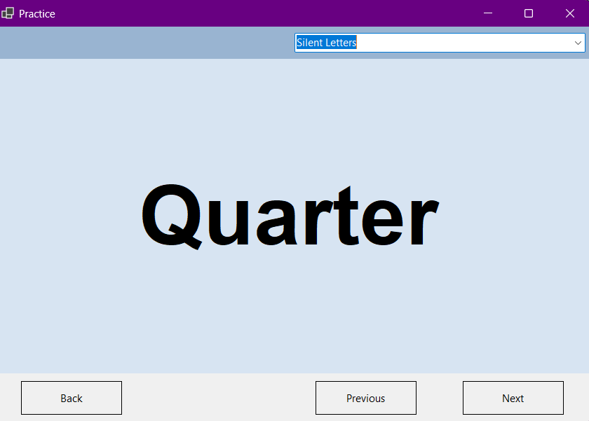
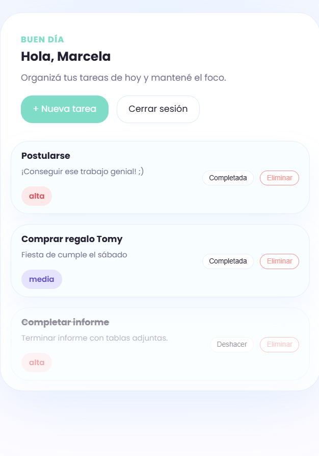

Sobre mí
Desarrollador de software con experiencia práctica en C#, Python, Kotlin y Android Studio. Actualmente cursando una Tecnicatura en Desarrollo de Software (IFTS n.° 29).
He contribuido a proyectos reales de desarrollo de aplicaciones, colaborando en sistemas de gestión enfocados en la eficiencia, la estructura lógica y la escalabilidad. Mi experiencia en operaciones y compras (más de 10 años) me brinda una ventaja única: comprendo los procesos de negocio, los plazos de entrega y la dinámica de equipo.
Además de programar, compito en remo una vez al mes; un deporte que ha moldeado mi enfoque hacia la disciplina, la constancia y el rendimiento bajo presión. Aplico esa misma mentalidad a cada proyecto en el que trabajo.

Proyectos

Mobile App
Aplicación desarrollada para la materia "Desarrollo de Aplicaciones Móviles". Los requisitos eran: iniciar sesión en la aplicación como administrador, registrar clientes, pagar cuotas y actividades, y consultar las fechas de vencimiento diarias. Se maquetó en Figma y se desarrolló en Android Studio utilizando Kotlin y XML
Ver repositorio

Desktop App - Inglés
Aplicación de escritorio personalizada, diseñada para un profesor de inglés sobre la base de un ejercicio. Los requerimientos del sistema fueron, por un lado, gestionar un crud para categorías semánticas y dentro de ellas para palabras o frases y por el otro, generar una visualización random y no repetitiva de esas palabras una vez seleccionada la categoría. La aplicación se desarrolló en C# con Visual Studio utilizando Windows Forms
Ver repositorio
Task Manager
Una aplicación web de tareas construida con Flask y SQLite. Task Manager permite crear, listar, completar y eliminar tareas desde una interfaz sencilla y responsive. Principales características: registro e inicio de sesión de usuarios, creación de tareas con título, descripción y prioridad, visualización de tareas pendientes y completadas, tareas completadas se muestran al final de la lista, diseño móvil-friendly con una paleta de colores moderna.
Ver repositorio Ver demoHabilidades
Hard Skills
Soft Skills
Hobbies
Contacto
Experiencia Laboral
Desarrolladora
Nuxon 2024-2025Formé parte del equipo de desarrollo de Nuxon, colaborando en la creación y optimización de sistemas de gestión con FlutterFlow y Firestore. Me enfoqué en la estructuración del flujo del backend, la gestión de colecciones de datos y la implementación de lógicas condicionales, consultas a la base de datos y funciones personalizadas según los requerimientos del sistema.
Gestión de Alquiler
SDCKapital 2019-2022Gestionaba un alquiler temporario, recibiendo a los huéspedes, coordinando entradas y salidas, y resolviendo necesidades durante la estancia. Administraba contratos, documentación y pagos, y llevaba las liquidaciones mensuales con precisión.
Responsable de Compras
Veliz & co. - Tienda de ropa 2007-2018Trabajé durante once años como encargada de la oficina de compras. Seleccionaba nuevas colecciones para la tienda, gestionaba relaciones con proveedores, y mantenía una oferta diversa de productos. Además, administraba todas las actividades de compras. Me desvinculeé voluntariamente al nacer mi segunda hija.
Educación
Tecnicatura en Desarrollo de Software
IFTS N°29 Agosto 2024 - PresenteFormación orientada a todas las etapas del ciclo de vida del software: análisis, diseño, programación, implementación y mantenimiento. Incluye práctica profesional con enfoque en metodologías ágiles y proyectos reales.
Tecnicatura Superior en Corrección de Textos
Instituto Superior de Letras Eduardo Mallea 2017-2019Formación terciaria en Corrección de Textos, con preparación para revisar y mejorar la redacción, gramática, ortografía, coherencia y estilo en distintos tipos de documentos.